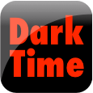

Welcome to Dark Time
 Dark Time is a simple clock. It has one simple goal, to allow you to see the time, especially when it's dark. It doesn't try to look like a physical clock. It uses a very readable font and color scheme to make the time as readable as possible.
Dark Time was created from a need to see the time in the middle of the night without your iOS device being too bright overall. Some of us are light sensitive and the need for a clock that isn't too bright but is highly visible has existed for a long time.
Help
For the Owner's Manual, please visit darktimeapp.com You'll find the complete manual, support, and contact information on the site.
Us
Dark Time is brought to you by Dovetail Computing, Inc. For help or bug reports, please send an email to support@darktimeapp.com and we'll get back to you as soon as we can.
The author is an instructor of programming at a college in Wisconsin. The app is the result of the author's own journey in learning iOS development. He now teaches iOS development at the college and uses this app as a demo and example. This app is released under an open source license here: